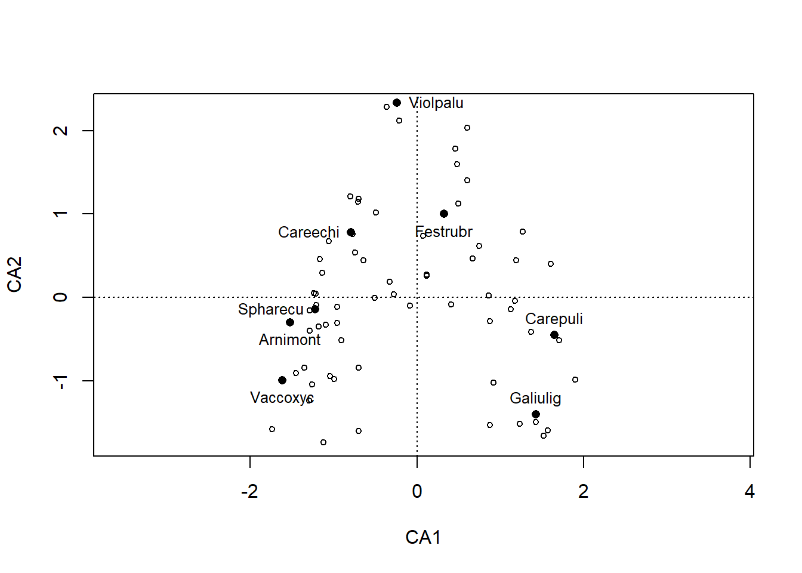
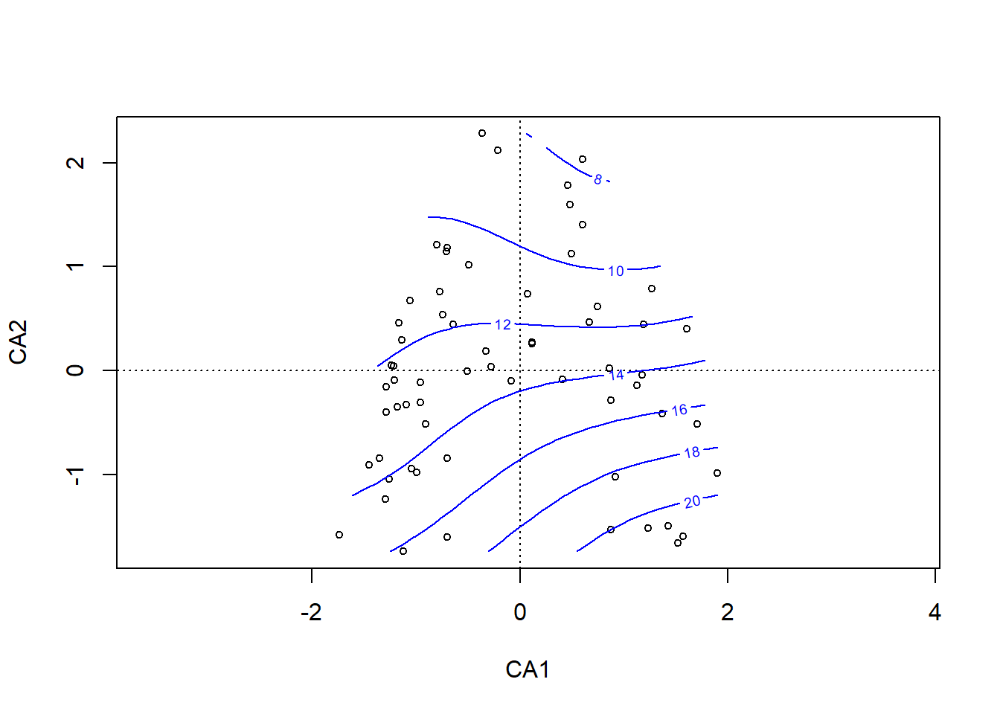
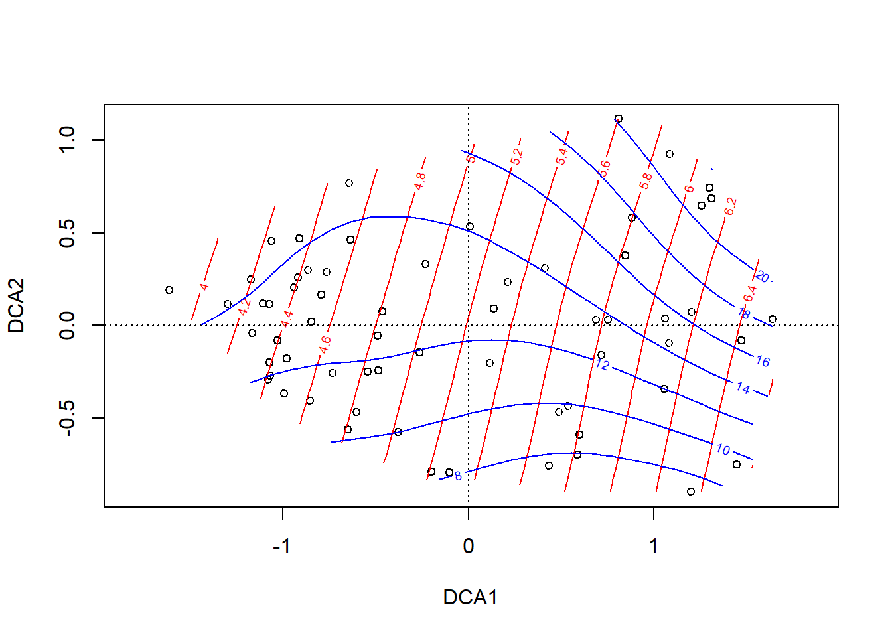
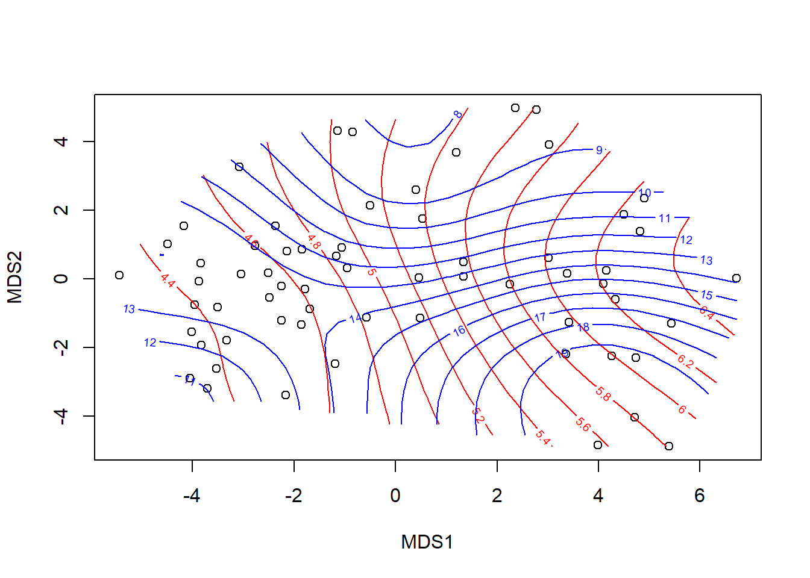

Stat7: Demo
Ordinationen II
- Demoscript als Download
- Datensatz Doubs.RData
- Funktion triplot.rda.R
Interpretation von Ordinationen
Wildi pp. 96 et seq.
## Plot Arten
if(!require(dave)){install.packages("dave")}
library(dave)
ca <- cca(sveg^0.5)
## Plot mit ausgewählten Arten
sel.spec <- c(3, 11, 23, 31, 39, 46, 72, 77, 96)
snames <- names(sveg[,sel.spec])
snames[1] "Vaccinium.oxycoccos" "Carex.echinata" "Arnica.montana"
[4] "Festuca.rubra" "Carex.pulicaris" "Sphagnum.recurvum"
[7] "Viola.palustris" "Galium.uliginosum" "Stachys.officinalis"scores <- scores(ca, display = "species", scaling = "sites")
sx <- scores[sel.spec, 1]
sy <- scores[sel.spec, 2]
plot(ca, display = "sites", type = "point")
points(sx, sy, pch = 16)
snames <- make.cepnames(snames)
text(sx, sy, snames, pos = c(1,2,1,1,3,2,4,3,1), cex = 0.8)
## Plot "response surfaces" in der CA
plot(ca, display = "sites", type = "point")
ordisurf(ca, ssit$pH.peat, add = T)
Family: gaussian
Link function: identity
Formula:
y ~ s(x1, x2, k = 10, bs = "tp", fx = FALSE)
Estimated degrees of freedom:
4.63 total = 5.63
REML score: 28.14791 plot(ca, display = "sites", type = "points")
ordisurf(ca, ssit$Waterlev.av, add = T, col = "blue")
Family: gaussian
Link function: identity
Formula:
y ~ s(x1, x2, k = 10, bs = "tp", fx = FALSE)
Estimated degrees of freedom:
5.07 total = 6.07
REML score: 161.492 ## Das gleiche für die DCA
dca <- decorana(sveg)
plot(dca, display = "sites", type = "points")
ordisurf(dca, ssit$pH.peat, add = T)
Family: gaussian
Link function: identity
Formula:
y ~ s(x1, x2, k = 10, bs = "tp", fx = FALSE)
Estimated degrees of freedom:
2.61 total = 3.61
REML score: 29.47878 ordisurf(dca, ssit$Waterlev.av, add = T, col = "blue")
Family: gaussian
Link function: identity
Formula:
y ~ s(x1, x2, k = 10, bs = "tp", fx = FALSE)
Estimated degrees of freedom:
6.23 total = 7.23
REML score: 161.1293 ## Das gleiche mit NMDS
mde <- vegdist(sveg, method = "euclidean")
mmds <- metaMDS(mde)Run 0 stress 0.1478603
Run 1 stress 0.1652625
Run 2 stress 0.1989437
Run 3 stress 0.1611976
Run 4 stress 0.1652625
Run 5 stress 0.1462813
... New best solution
... Procrustes: rmse 0.02537661 max resid 0.1451257
Run 6 stress 0.1471495
Run 7 stress 0.1675598
Run 8 stress 0.1602715
Run 9 stress 0.1792628
Run 10 stress 0.1471495
Run 11 stress 0.4064439
Run 12 stress 0.1659453
Run 13 stress 0.1741626
Run 14 stress 0.1471495
Run 15 stress 0.1925595
Run 16 stress 0.1462959
... Procrustes: rmse 0.002078915 max resid 0.01276148
Run 17 stress 0.1471847
Run 18 stress 0.1476293
Run 19 stress 0.1864317
Run 20 stress 0.1766467
*** No convergence -- monoMDS stopping criteria:
1: no. of iterations >= maxit
13: stress ratio > sratmax
6: scale factor of the gradient < sfgrminif(!require(MASS)){install.packages("MASS")}
library(MASS)
imds <- isoMDS(mde)initial value 21.981028
iter 5 value 15.595142
iter 10 value 15.269201
final value 15.229997
convergedplot(mmds$points)
ordisurf(mmds, ssit$pH.peat, add = T)
Family: gaussian
Link function: identity
Formula:
y ~ s(x1, x2, k = 10, bs = "tp", fx = FALSE)
Estimated degrees of freedom:
5.99 total = 6.99
REML score: 41.84463 ordisurf(mmds, ssit$Waterlev.av,add = T, col = "blue")
Family: gaussian
Link function: identity
Formula:
y ~ s(x1, x2, k = 10, bs = "tp", fx = FALSE)
Estimated degrees of freedom:
6.32 total = 7.32
REML score: 168.9827 plot(imds$points)
ordisurf(imds, ssit$pH.peat, add = T)
Family: gaussian
Link function: identity
Formula:
y ~ s(x1, x2, k = 10, bs = "tp", fx = FALSE)
Estimated degrees of freedom:
7.06 total = 8.06
REML score: 37.68641 ordisurf(imds, ssit$Waterlev.av, add = T, col = "blue")
Family: gaussian
Link function: identity
Formula:
y ~ s(x1, x2, k = 10, bs = "tp", fx = FALSE)
Estimated degrees of freedom:
6.01 total = 7.01
REML score: 167.6801 



Constrained ordination
## 5 Umweltvariablen gewählt, durch die die Ordination constrained werden soll
ssit
summary(ssit)
s5 <- c("pH.peat", "P.peat", "Waterlev.av", "CEC.peat", "Acidity.peat")
ssit5 <- ssit[s5]
data(sveg)
summary(sveg)## RDA = constrained PCA
rda <- rda(sveg~., ssit5)
plot(rda)
## CCA = constrained CA
cca <- cca(sveg~., ssit5)
plot(cca)
## Unconstrained and constrained variance
tot <- cca$tot.chi
constr <- cca$CCA$tot.chi
constr / totRedundancy analysis (RDA)
Mehr Details zu RDA aus Borcard et al. (Numerical ecology with R)
## Datensatz Doubs
## Doubs Datensatz in den workspace laden
load("data/Doubs.RData") summary(spe)
summary(env)
summary(spa)## Entfernen der Untersuchungsfläche ohne Arten
spe <- spe[-8, ]
env <- env[-8, ]
spa <- spa[-8, ]
## Karten für 4 Fischarten
par(mfrow = c(2, 2))
plot(spa, asp = 1, col = "brown", cex = spe$Satr, xlab = "x (km)", ylab = "y (km)", main = "Brown trout")
lines(spa, col = "light blue")
plot(spa, asp = 1, col = "brown", cex = spe$Thth, xlab = "x (km)", ylab = "y (km)", main = "Grayling")
lines(spa, col = "light blue")
plot(spa, asp = 1, col = "brown", cex = spe$Alal, xlab = "x (km)", ylab = "y (km)", main = "Bleak")
lines(spa, col = "light blue")
plot(spa, asp = 1, col = "brown", cex = spe$Titi, xlab = "x (km)", ylab = "y (km)", main = "Tench")
lines(spa, col = "light blue")
## Set aside the variable 'dfs' (distance from the source) for
## later use
dfs <- env[, 1]
## Remove the 'dfs' variable from the env data frame
env2 <- env[, -1]
## Recode the slope variable (slo) into a factor (qualitative)
## variable to show how these are handled in the ordinations
slo2 <- rep(".very_steep", nrow(env))
slo2[env$slo <= quantile(env$slo)[4]] <- ".steep"
slo2[env$slo <= quantile(env$slo)[3]] <- ".moderate"
slo2[env$slo <= quantile(env$slo)[2]] <- ".low"
slo2 <- factor(slo2, levels = c(".low", ".moderate", ".steep", ".very_steep"))
table(slo2)slo2
.low .moderate .steep .very_steep
8 8 6 7 ## Create an env3 data frame with slope as a qualitative variable
env3 <- env2
env3$slo <- slo2
## Create two subsets of explanatory variables
## Physiography (upstream-downstream gradient)
envtopo <- env2[, c(1 : 3)]
names(envtopo)[1] "ele" "slo" "dis"## Water quality
envchem <- env2[, c(4 : 10)]
names(envchem)[1] "pH" "har" "pho" "nit" "amm" "oxy" "bod"## Hellinger-transform the species dataset
library(vegan)
spe.hel <- decostand(spe, "hellinger")
spe.hel## Redundancy analysis (RDA)
### RDA of the Hellinger-transformed fish species data, constrained
### by all the environmental variables contained in env3
spe.rda <- rda(spe.hel ~ ., env3) # Observe the shortcut formulaspe.rda
summary(spe.rda) # Scaling 2 (default)## Canonical coefficients from the rda object
coef(spe.rda)## Unadjusted R^2 und Adjusted R^2
(R2 <- RsquareAdj(spe.rda))$r.squared
[1] 0.7270922
$adj.r.squared
[1] 0.5224114### Triplots of the rda results (lc scores)
### Site scores as linear combinations of the environmental variables
## dev.new(title = "RDA scaling 1 and 2 + lc", width = 12, height = 6, noRStudioGD = TRUE)
par(mfrow = c(1, 2))
## Scaling 1
plot(spe.rda,scaling = 1, display = c("sp", "lc", "cn"), main = "Triplot RDA spe.hel ~ env3 - scaling 1 - lc scores")
spe.sc1 <- scores(spe.rda, choices = 1:2, scaling = 1, display = "sp")
arrows(0, 0, spe.sc1[, 1] * 0.92, spe.sc1[, 2] * 0.92, length = 0, lty = 1, col = "red")
text(-0.75, 0.7, "a", cex = 1.5)
## Scaling 2
plot(spe.rda, display = c("sp", "lc", "cn"), main = "Triplot RDA spe.hel ~ env3 - scaling 2 - lc scores")
spe.sc2 <- scores(spe.rda, choices = 1:2, display = "sp")
arrows(0, 0, spe.sc2[, 1] * 0.92, spe.sc2[, 2] * 0.92,length = 0, lty = 1, col = "red")
text(-0.82, 0.55, "b", cex = 1.5)
### Triplots of the rda results (wa scores)
### Site scores as weighted averages (vegan's default)
## Scaling 1 : distance triplot
##dev.new(title = "RDA plot", width = 12, height = 6, noRStudioGD = TRUE)
par(mfrow = c(1, 2))
plot(spe.rda, scaling = 1, main = "Triplot RDA spe.hel ~ env3 - scaling 1 - wa scores")
arrows(0, 0, spe.sc1[, 1] * 0.92, spe.sc1[, 2] * 0.92, length = 0, lty = 1, col = "red")
## Scaling 2 (default) : correlation triplot
plot(spe.rda, main = "Triplot RDA spe.hel ~ env3 - scaling 2 - wa scores")
arrows(0, 0, spe.sc2[, 1] * 0.92, spe.sc2[, 2] * 0.92, length = 0, lty = 1, col = "red")
## Select species with goodness-of-fit at least 0.6 in the
## ordination plane formed by axes 1 and 2
spe.good <- goodness(spe.rda)
sel.sp <- which(spe.good[, 2] >= 0.6)
sel.spSatr Phph Chna Baba Albi Rham Legi Cyca Abbr Gyce Ruru Blbj Alal Anan
2 3 7 11 12 16 17 19 21 23 24 25 26 27 ## Triplots with homemade function triplot.rda(), scalings 1 and 2
source("stat5-8/triplot.rda.R")
##dev.new(title = "RDA plot with triplot.rda", width = 12, height = 6, noRStudioGD = TRUE)
par(mfrow = c(1, 2))
triplot.rda(spe.rda, site.sc = "lc", scaling = 1, cex.char2 = 0.7, pos.env = 3,
pos.centr = 1, mult.arrow = 1.1, mar.percent = 0.05, select.spe = sel.sp)
-----------------------------------------------------------------------
Site constraints (lc) selected. To obtain site scores that are weighted
sums of species scores (default in vegan), argument site.sc must be set
to wa.
-----------------------------------------------------------------------Error in if (class(mat) == "matrix") {: Bedingung hat Länge > 1text(-0.92, 0.72, "a", cex = 2)
triplot.rda(spe.rda, site.sc = "lc", scaling = 2, cex.char2 = 0.7, pos.env = 3,
pos.centr = 1, mult.arrow = 1.1, mar.percent = 0.05, select.spe = sel.sp)
-----------------------------------------------------------------------
Site constraints (lc) selected. To obtain site scores that are weighted
sums of species scores (default in vegan), argument site.sc must be set
to wa.
-----------------------------------------------------------------------Error in if (class(mat) == "matrix") {: Bedingung hat Länge > 1text(-2.82, 2, "b", cex = 2)
## Global test of the RDA result
anova(spe.rda, permutations = how(nperm = 999))Permutation test for rda under reduced model
Permutation: free
Number of permutations: 999
Model: rda(formula = spe.hel ~ ele + slo + dis + pH + har + pho + nit + amm + oxy + bod, data = env3)
Df Variance F Pr(>F)
Model 12 0.36537 3.5523 0.001 ***
Residual 16 0.13714
---
Signif. codes: 0 '***' 0.001 '**' 0.01 '*' 0.05 '.' 0.1 ' ' 1## Tests of all canonical axes
anova(spe.rda, by = "axis", permutations = how(nperm = 999))Permutation test for rda under reduced model
Forward tests for axes
Permutation: free
Number of permutations: 999
Model: rda(formula = spe.hel ~ ele + slo + dis + pH + har + pho + nit + amm + oxy + bod, data = env3)
Df Variance F Pr(>F)
RDA1 1 0.228083 26.6105 0.001 ***
RDA2 1 0.053698 6.2649 0.003 **
RDA3 1 0.032119 3.7473 0.309
RDA4 1 0.023206 2.7074 0.762
RDA5 1 0.008699 1.0149 1.000
RDA6 1 0.007218 0.8421 1.000
RDA7 1 0.004869 0.5681 1.000
RDA8 1 0.002924 0.3412 1.000
RDA9 1 0.002141 0.2498 1.000
RDA10 1 0.001160 0.1353 1.000
RDA11 1 0.000914 0.1066 1.000
RDA12 1 0.000341 0.0397 1.000
Residual 16 0.137139
---
Signif. codes: 0 '***' 0.001 '**' 0.01 '*' 0.05 '.' 0.1 ' ' 1### Partial RDA: effect of water chemistry, holding physiography
### constant
## Simple syntax; X and W may be in separate tables of quantitative
## variables
(spechem.physio <- rda(spe.hel, envchem, envtopo))Call: rda(X = spe.hel, Y = envchem, Z = envtopo)
Inertia Proportion Rank
Total 0.5025 1.0000
Conditional 0.2087 0.4152 3
Constrained 0.1602 0.3189 7
Unconstrained 0.1336 0.2659 18
Inertia is variance
Eigenvalues for constrained axes:
RDA1 RDA2 RDA3 RDA4 RDA5 RDA6 RDA7
0.09136 0.04590 0.00928 0.00625 0.00387 0.00214 0.00142
Eigenvalues for unconstrained axes:
PC1 PC2 PC3 PC4 PC5 PC6 PC7 PC8
0.04643 0.02071 0.01746 0.01326 0.00975 0.00588 0.00512 0.00400
(Showing 8 of 18 unconstrained eigenvalues)summary(spechem.physio)## Formula interface; X and W variables must be in the same
## data frame
(spechem.physio2 <- rda(spe.hel ~ pH + har + pho + nit + amm + oxy + bod
+ Condition(ele + slo + dis), data = env2))Call: rda(formula = spe.hel ~ pH + har + pho + nit + amm + oxy + bod +
Condition(ele + slo + dis), data = env2)
Inertia Proportion Rank
Total 0.5025 1.0000
Conditional 0.2087 0.4152 3
Constrained 0.1602 0.3189 7
Unconstrained 0.1336 0.2659 18
Inertia is variance
Eigenvalues for constrained axes:
RDA1 RDA2 RDA3 RDA4 RDA5 RDA6 RDA7
0.09136 0.04590 0.00928 0.00625 0.00387 0.00214 0.00142
Eigenvalues for unconstrained axes:
PC1 PC2 PC3 PC4 PC5 PC6 PC7 PC8
0.04643 0.02071 0.01746 0.01326 0.00975 0.00588 0.00512 0.00400
(Showing 8 of 18 unconstrained eigenvalues)## Test of the partial RDA, using the results with the formula
## interface to allow the tests of the axes to be run
anova(spechem.physio2, permutations = how(nperm = 999))Permutation test for rda under reduced model
Permutation: free
Number of permutations: 999
Model: rda(formula = spe.hel ~ pH + har + pho + nit + amm + oxy + bod + Condition(ele + slo + dis), data = env2)
Df Variance F Pr(>F)
Model 7 0.16023 3.0836 0.001 ***
Residual 18 0.13362
---
Signif. codes: 0 '***' 0.001 '**' 0.01 '*' 0.05 '.' 0.1 ' ' 1anova(spechem.physio2, permutations = how(nperm = 999), by = "axis")Permutation test for rda under reduced model
Forward tests for axes
Permutation: free
Number of permutations: 999
Model: rda(formula = spe.hel ~ pH + har + pho + nit + amm + oxy + bod + Condition(ele + slo + dis), data = env2)
Df Variance F Pr(>F)
RDA1 1 0.091363 12.3078 0.001 ***
RDA2 1 0.045904 6.1839 0.016 *
RDA3 1 0.009277 1.2497 0.962
RDA4 1 0.006250 0.8420 0.991
RDA5 1 0.003868 0.5210 0.999
RDA6 1 0.002145 0.2890 1.000
RDA7 1 0.001424 0.1919 0.995
Residual 18 0.133617
---
Signif. codes: 0 '***' 0.001 '**' 0.01 '*' 0.05 '.' 0.1 ' ' 1## Partial RDA triplots (with fitted site scores)
## with function triplot.rda
## Scaling 1
##dev.new(title = "Partial RDA",width = 12, height = 6, noRStudioGD = TRUE)
par(mfrow = c(1, 2))
triplot.rda(spechem.physio, site.sc = "lc", scaling = 1,
cex.char2 = 0.8, pos.env = 3, mar.percent = 0)
-----------------------------------------------------------------------
Site constraints (lc) selected. To obtain site scores that are weighted
sums of species scores (default in vegan), argument site.sc must be set
to wa.
-----------------------------------------------------------------------
No factor, hence levels cannot be plotted with symbols; 'plot.centr' is set to FALSEError in if (class(mat) == "matrix") {: Bedingung hat Länge > 1text(-0.58, 0.64, "a", cex = 2)Error in text.default(-0.58, 0.64, "a", cex = 2): plot.new has not been called yet## Scaling 2
triplot.rda(spechem.physio, site.sc = "lc", scaling = 2, cex.char2 = 0.8,
pos.env = 3, mult.spe = 1.1, mar.percent = 0.04)
-----------------------------------------------------------------------
Site constraints (lc) selected. To obtain site scores that are weighted
sums of species scores (default in vegan), argument site.sc must be set
to wa.
-----------------------------------------------------------------------
No factor, hence levels cannot be plotted with symbols; 'plot.centr' is set to FALSEError in if (class(mat) == "matrix") {: Bedingung hat Länge > 1text(-3.34, 3.64, "b", cex = 2)Error in text.default(-3.34, 3.64, "b", cex = 2): plot.new has not been called yetVariation partioning
### Variation partitioning with two sets of explanatory variables
## Explanation of fraction labels (two, three and four explanatory
## matrices) with optional colours
par(mfrow = c(1, 3), mar = c(1, 1, 1, 1))
showvarparts(2, bg = c("red", "blue"))
showvarparts(3, bg = c("red", "blue", "yellow"))
showvarparts(4, bg = c("red", "blue", "yellow", "green"))
### 1. Variation partitioning with all explanatory variables
### (except dfs)
(spe.part.all <- varpart(spe.hel, envchem, envtopo))
Partition of variance in RDA
Call: varpart(Y = spe.hel, X = envchem, envtopo)
Explanatory tables:
X1: envchem
X2: envtopo
No. of explanatory tables: 2
Total variation (SS): 14.07
Variance: 0.50251
No. of observations: 29
Partition table:
Df R.squared Adj.R.squared Testable
[a+b] = X1 7 0.60579 0.47439 TRUE
[b+c] = X2 3 0.41524 0.34507 TRUE
[a+b+c] = X1+X2 10 0.73410 0.58638 TRUE
Individual fractions
[a] = X1|X2 7 0.24131 TRUE
[b] 0 0.23308 FALSE
[c] = X2|X1 3 0.11199 TRUE
[d] = Residuals 0.41362 FALSE
---
Use function 'rda' to test significance of fractions of interest## Plot of the partitioning results
par(mfrow = c(1, 1))
plot(spe.part.all, digits = 2, bg = c("red", "blue"),
Xnames = c("Chemistry", "Physiography"),
id.size = 0.7)